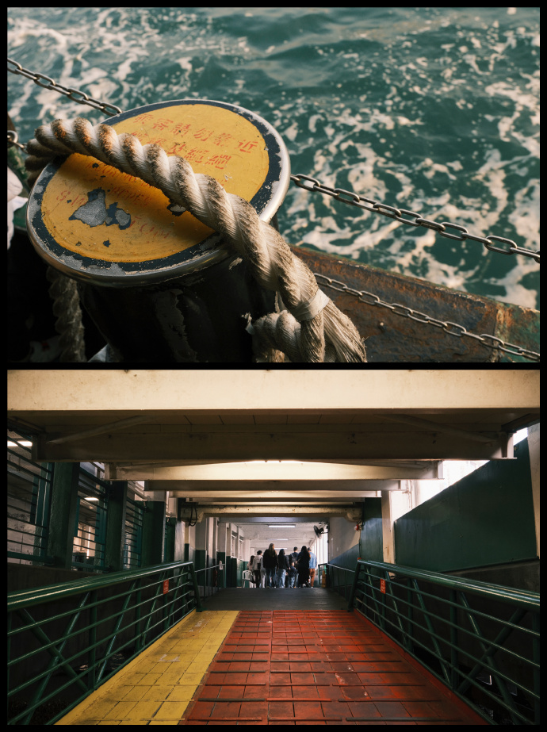

9. 天星小轮 （维港）
Transport
港铁：坚尼地城站→中环站（港岛线，15 分钟），步行至中环天星码头
或叮叮车：坚尼地城→中环毕打街（25 分钟），步行至码头
Photo tips
在船上用窗框构图，或在码头栏杆边拍人像剪影
Nearby food
富豪雪糕车（尖沙咀码头）：软雪糕（李现吃过）
Reference photos

港铁：坚尼地城站→中环站（港岛线，15 分钟），步行至中环天星码头
或叮叮车：坚尼地城→中环毕打街（25 分钟），步行至码头
在船上用窗框构图，或在码头栏杆边拍人像剪影
富豪雪糕车（尖沙咀码头）：软雪糕（李现吃过）
